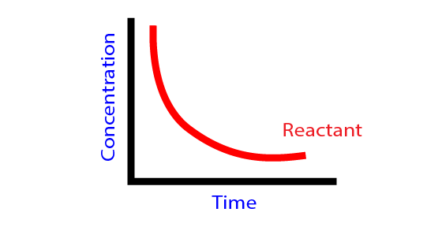

Introduction
The branch of physical chemistry which deals wh the study of rate of reaction mechanism of reaction and the factors affecting the rate of reaction is called Chemical kinetics. It is to be contrasted with chemical thermodynamics, which deals with the direction in which a reaction occurs but in itself tells nothing about its rate

Rate of reaction:
The change in the rate of concentration reactant or product with time is called rate of reaction.
Let us consider a reactant 'A' changes to product 'B' at time't₁'. let the concentration of react 'A' be as and the product 'B'. Similarly at t= t₂,let the concentration of reactant 'A' be A₂ and the product 'B' be B₂.
Equivalent rate equation is the rate of reaction w.r.t any Species divided by its stoichiometry coefficient. The rate equation which is independent of the reactant or product is called equivalent rate expression.
Types of rate of reaction
- Average rate of reaction:The change in the concentration of reactant or product with certain interval of time period is called average rate of reaction. It can be measured.
- Instantaneous rate of reaction: The rate of chemical reaction at any particular instant of time during chemical change. As time interval decreases, the average rate of reaction becomes instantaneous. It can be determined by knowing the slope of tangent drawn on concentration time clove at particular time.
Factor affecting rate of reaction
Collisions between the reacting molecules is the primary requirement for the chemical reaction to occur but all the collisions may not cause chemical reaction. Those collisions which cause chemical reaction are called effective collisions.
Besides collisions there are certain factors that affect the rate of chemical reaction. They are
- Nature of reactant
The rate of chemical reaction depends upon the nature of reactant. If the reactant is ionic compound then it shows ionic reaction which is very fast but if the reactant is covalent compound then of it shows molecular reaction which is very slow. - Particle size of reactant
Rate of reaction increases with size of reactant molecules increases. When the surface area increases the number of collisions will also increases and hence the reaction will be faster.For example: powder form of limestone reads more Vigorously with HCl than pice of limestone.
- concentration of reactant
The rate of reaction is directly proportional to concentration of reactant i.e. Rate of reaction alpha concentration. When concentration of reactant increases then the rate of reaction also increases. This is due to the increases in effective collisions of reacting molecules. - Temperature
Rate of reaction increases nearly by two or three times when the temperature is increased by 10°C.On increasing the temperature on reactant molecules, the average kinetic energy is increased so that the reactant is changed into product easily. - Catalyst
A catalyst itself do not take part in chemical reaction but changes the rate of reaction. By using the positive catalyst the rate of reaction is increased. Catalyst decreases the activation energy (Ea) and provides new mechanism or path which ultimately increases the date of reaction. But -ve catalyst decreases the rate of reaction. - Light
The rate of photochemical reaction increases with the intensity of light because the light photons provides the essential energy of activation for the reaction.Example the rate of reaction between Hydrogen gas and chlorine gas increases with the intensity of light.
H₂(g)+Cl₂(g) ────>HCl(g)
Rate of reaction and stoichiometry
Let us consider a reaction
N₂(g)+3H₂(g) <────> 2NH₃(g)
Now, Rate of disappearance of N₂=-d[N₂]/dt
Now, Rate of disappearance of H₂=-d[H₂]/dt
Now, Rate of disappearance of NH₃=-d[NH₃]/dt
Here, the change in the concentration of nitrogen, hydrogen and ammonia with time is different. So to get Independent rate i.e. same rate of reaction in terms of each species, the rate expressed in terms of each species must be divided by its stoichiometric coefficient.
i.e., Rate reaction=-d[N₂]/dt=-1/3 d[H₂]/dt=+1/2 d[NH₃]/dt
The mathematical expression that gives the true rate of reaction in terms of concentration which influences the rate of reaction is called reaction rate law.